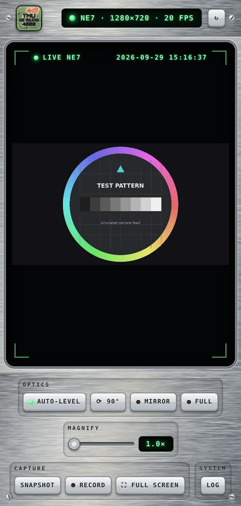
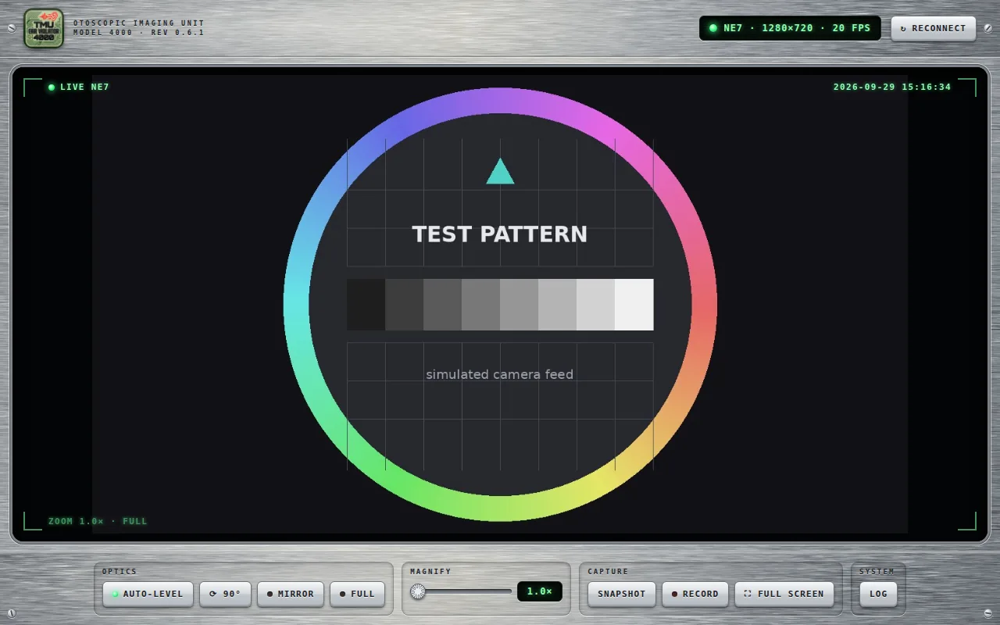
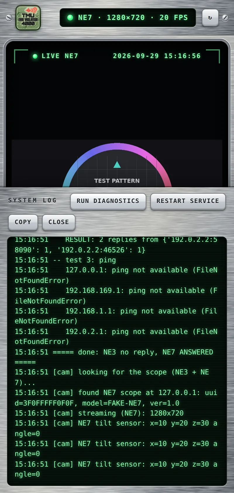

The hardware
One of the many WiFi ear cameras that broadcast an HNDEC-xxxxxx network
and normally need the "SL ylz" app.


Use your cheap WiFi ear camera without the vendor app. One small, readable program (source-available, free for non-commercial use) that shows the live picture on your phone or computer and never talks to the internet.

One of the many WiFi ear cameras that broadcast an HNDEC-xxxxxx network
and normally need the "SL ylz" app.
No trackers, ads, analytics or accounts. The Android app asks for network access only.
Speaks both known protocols, NE3 and NE7, and detects which one your scope uses.
Uses the scope's built-in tilt sensor to keep the picture the right way up.
Full camera resolution, fullscreen mode, and Square and Circle views. Save stills and recordings.
A Log panel with one-click network tests, Reconnect and Restart buttons.
The desktop version is one Python file with no dependencies to install.


.apk from the Releases page and open it. Allow installing from your browser or file manager when asked.HNDEC-xxxx WiFi (no password). When Android says there's no internet, choose Stay connected.ne3web.py (right-click → Save link as).HNDEC-xxxx WiFi.python3 ne3web.pyA plain MJPEG stream for VLC or OBS is at http://localhost:8080/stream.mjpg.
| Permissions (Android) | Network access only: INTERNET and ACCESS_NETWORK_STATE |
|---|---|
| Talks to | The scope on its own WiFi, and itself on 127.0.0.1. Nothing on the internet. |
| Stores | Only the snapshots and recordings you choose to save |
| Code | About 1,250 lines of plain Python you can read, in two files |
The scope's own WiFi has no password, so anyone nearby can connect to it while it's switched on. That's the hardware, not this app.
The scope creates its own WiFi network and sends its picture as JPEG images split into small UDP packets. Two protocols are known:
The scope sits at 192.168.169.1. Each frame arrives with its JPEG header
removed, so the app rebuilds it. The tilt reading rides along in the first packet.
The scope sits at 192.168.1.1 and answers a broadcast "who's there?"
message. Frames arrive as whole JPEGs in numbered chunks, with tilt readings on a separate port.
The app reassembles the frames and shows them in a small web page served from your own device.
This is a hobby project, not a medical device. Don't push the scope in further than is comfortable, and see a doctor or nurse for pain, discharge, hearing changes, or wax you can't shift safely.